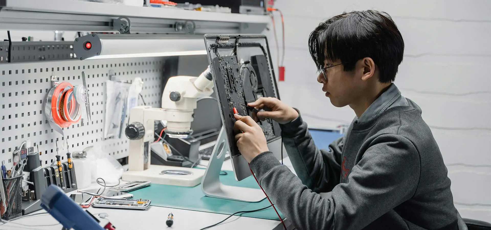

AI Business Solutions
Understand the Business. Transform What Matters.
We believe meaningful AI transformation starts with understanding the business at its deepest level. We examine how work actually happens across people, processes, systems, data, and decisions to uncover inefficiencies, hidden dependencies, and opportunities for improvement.
By combining business process intelligence, AI engineering, and intelligent automation, we redesign how work gets done and implement solutions that deliver measurable improvements in productivity, cost efficiency, accuracy, service quality, and business performance.
Our focus is not simply deploying AI. It is solving the right business problems and translating innovation into tangible business value.
What We Deliver
Understand operations at the ground level before deciding where AI can make a difference.
- Map end-to-end business workflows and operational dependencies.
- Identify bottlenecks, repetitive tasks, and manual interventions.
- Analyze process variations, exceptions, and root causes.
- Assess current performance against business KPIs.
- Identify opportunities for simplification, automation, and redesign.
Prioritize AI investments based on business impact rather than technology trends.
- Identify high-value AI and automation opportunities.
- Evaluate feasibility, business readiness, and implementation complexity.
- Estimate potential productivity gains, cost savings, and quality improvements.
- Define measurable success criteria and expected business outcomes.
- Develop a prioritized roadmap for pilots, deployment, and scaling.
Redesign business processes using AI, automation, and human expertise.
- Automate repetitive, rules-driven, and knowledge-intensive activities.
- Integrate AI agents into existing business workflows.
- Enable intelligent handling of exceptions and complex cases.
- Combine human judgment with AI-assisted execution and approvals.
- Reduce unnecessary handoffs, delays, and operational friction.
Improve the quality and speed of business decisions through contextual intelligence.
- Consolidate insights across business systems and data sources.
- Extract actionable intelligence from structured and unstructured information.
- Enable natural-language access to business knowledge and metrics.
- Identify patterns, risks, anomalies, and emerging operational issues.
- Support faster, evidence-based decisions across business functions.
Improve how teams perform by addressing the root causes of inefficiency.
- Reduce manual effort and repetitive administrative work.
- Improve turnaround times and throughput.
- Standardize processes and reduce avoidable errors.
- Increase workforce capacity without proportionally increasing operating costs.
- Improve consistency, quality, and service delivery.
Make interactions more responsive, consistent, and context-aware.
- Improve customer and employee support through intelligent assistants.
- Enable contextual responses using enterprise knowledge.
- Streamline service requests, case handling, and issue resolution.
- Improve response quality and reduce resolution delays.
- Escalate sensitive or complex decisions to the appropriate human experts.
Build solutions around the unique operating realities of each business.
- Design AI solutions for industry-specific workflows and business rules.
- Integrate with existing enterprise applications and data platforms.
- Support complex workflows involving documents, communications, and business records.
- Configure solutions for organizational policies, controls, and approval processes.
- Adapt solutions as business needs, regulations, and operating models evolve.
Ensure AI initiatives produce demonstrable, sustained improvements.
- Establish baseline metrics before implementation.
- Track productivity, cost, quality, accuracy, and turnaround time.
- Measure adoption, automation effectiveness, and human intervention rates.
- Compare actual outcomes against expected business benefits.
- Continuously refine workflows and AI solutions based on operational feedback.
Our Approach
Discover → Diagnose → Design → Implement → Measure → Optimize
How We Measure Impact
Every engagement starts with clearly defined business outcomes. Depending on the use case, we measure:
Productivity
Reduction in manual effort and increase in work completed per employee.
Cost efficiency
Reduction in cost per transaction, case, or process.
Speed
Improvement in turnaround time and resolution time.
Quality
Reduction in errors, rework, and process variation.
Experience
Improvements in customer satisfaction and employee experience.
Business value
Achievement of agreed operational and financial targets.
We establish baselines and target metrics with stakeholders before implementation, then validate results using agreed measurement methods. Outcomes depend on the business context, data quality, adoption, and solution design.

Built Around Your Business
We work across functions and industries, tailoring each engagement to the way your business operates rather than forcing your processes into a predefined AI solution.
Our capabilities can support customer operations, finance, procurement, human resources, supply chain, healthcare and insurance operations, and other complex business functions.
Talk to Our TeamBusiness Operations
By leveraging advanced technologies and industry best practices, we help organizations automate workflows, enhance efficiency, and improve overall performance.
Streamlining Your Operations for
Maximum Efficiency and Growth
Contact Center
We offer Contact Center Operations services to boost efficiency, enhance agent productivity, and elevate customer satisfaction across every interaction.
Content Moderation
Alpha Net empowers platforms to manage UGC at scale—promoting safety, compliance, and user trust through intelligent content moderation.
HR Operations
Alpha Net’s HR Operations service streamlines payroll, benefits, compliance, and employee support with smart technology and proven processes.
GCC Hiring Ops
Our GCC Hiring Operations Services streamline recruitment, from talent identification to onboarding, ensuring you attract and retain top talent for your GCCs.
Finance & Accounting Operations
Alpha Net’s Finance & Accounting Operations service streamlines your financial core—spanning AP, AR, general ledger, reporting, and treasury.
Supply Chain Management Operations
Alpha Net’s Supply Chain Management Operations service streamlines end-to-end logistics—from procurement and inventory to distribution and supplier coordination.
Procurement Operations
We help organizations reduce costs, enhance supplier relationships, and maintain compliance across all procurement activities.
Asset Management & Field Services Operations
Boost field performance and asset uptime with Alpha Net—through smart data management, automated workflows, and efficient technician scheduling.
Streamlining Core Processes for Business Excellence
Alpha Net’s “Business Operations” services focus on optimizing and streamlining the core processes that drive your business forward. By leveraging advanced technologies and industry best practices, we help organizations automate workflows, enhance efficiency, and improve overall performance. From process automation and resource management to system integration and analytics, our solutions ensure that your operations run smoothly and effectively.
We work closely with you to align technology with business objectives, delivering tailored solutions that drive productivity, reduce costs, and enable better decision-making. With our expertise, your business can achieve a new level of operational excellence and agility in today’s fast-paced digital landscape.
Trusted by Leading Brands
We work with diverse startups, spanning many sectors. Whatever industry you’re in, we’re here to partner with you and help you thrive.


Driving the Future of Enterprise
Business with Unmatched Results
Enhanced Operational Efficiency
Streamline workflows and automate routine tasks to reduce costs, minimize errors, and boost productivity across all departments.
Data-Driven Decision Making
Leverage real-time analytics and insights to make smarter, faster business decisions and stay ahead of market trends.
Improved Customer Experience
Deliver personalized, seamless interactions across digital touchpoints to increase customer satisfaction and loyalty

Take quick action and
power your business today
Power Your Business with Our Tech Expertise